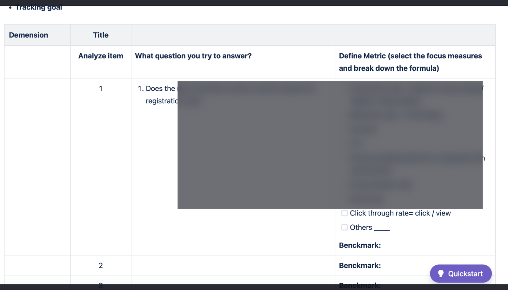

問題
舊流程轉換率不足；新舊用戶未分流埋點，易誤判改版成效。
解法
假設驅動工作流＋Tracking Plan；GA／datalayer 區分客群，依數據迭代 UI。
成果
可重用追蹤模板、分批上線對照指標，並留下分流採坑供複盤。
- 建立可重複使用的 Design Tracking / GA 規劃模板
- 多功能分批上線並對照監控指標（點擊、參與度、成功率）
- 記錄分流錯誤與關鍵影響者等監控採坑，供團隊複盤
視覺敘事




舊流程轉換率不足；新舊用戶未分流埋點，易誤判改版成效。
假設驅動工作流＋Tracking Plan；GA／datalayer 區分客群，依數據迭代 UI。
可重用追蹤模板、分批上線對照指標，並留下分流採坑供複盤。
